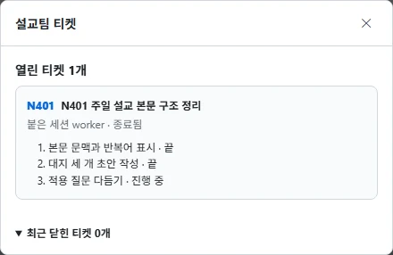
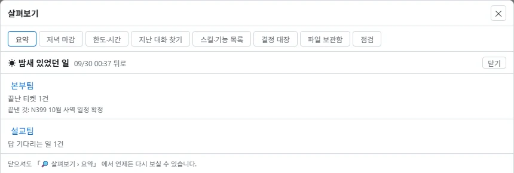

여러 AI를 한 팀으로 부려
목회 일을 이어 가게 돕습니다
오레브는 클로드 코드·코덱스·안티그래비티 같은 AI를 팀으로 부려 목회 일을 이어서 해 주는 작업 도구입니다. 쓰시던 AI를 대신하는 프로그램이 아니라, 그 AI들을 한 화면에 모아 지휘하게 돕는 작업 운영 체제에 가깝습니다.
오레브는 무엇인가요
AI 여러 대를 한자리에서 부리는 관제실입니다.
요즘 AI는 채팅창 하나에 말을 걸어 쓰는 것이 보통입니다. 그런데 일이 커지면 한 대로는 모자라서 자료를 찾는 AI, 글을 쓰는 AI, 코드를 만지는 AI를 따로 띄우게 되고, 곧 창이 여섯 개가 됩니다. 어느 창이 일하는 중인지, 어느 창이 대답을 기다리다 멈췄는지 사람이 일일이 돌아다녀야 하지요.
오레브는 그 창들을 한 화면에 모아 대신 지켜봐 주는 프로그램입니다. 멈춰 선 AI가 있으면 알려 드리고, AI끼리 주고받을 말은 옮겨 주고, 무슨 일이 있었는지 기록해 둡니다.

팀
한 가지 일을 맡은 AI 모임입니다. 예: 설교 준비, 교회 행정.
마스터
팀을 지휘하는 AI입니다. 일을 잘게 나눠 맡기고 결과를 검사합니다.
워커
마스터가 필요할 때 세우는 일손 AI입니다. 일이 끝나면 내립니다.
왜 오레브인가요 — 실제로 써 보며 느낀 여섯 가지
코딩 하나만 보면 AI 하나가 더 간단합니다. 오레브의 쓸모는 한 AI로는 어려운 전체 일 — 매주의 사역 흐름과 긴 작업에서 나옵니다.
같은 구독으로 더 오래
AI 구독 하나는 주간 한도가 금방 찹니다. 클로드·코덱스·제미나이를 나눠 쓰면 같은 비용으로 더 오래 일합니다. 무거운 코딩은 코덱스, 문서는 제미나이, 판단과 검수는 클로드에게 맡기는 식입니다.
사람이 없는 시간에도
한도가 풀리면 다시 깨우고, 쉬는 일손을 알려 주고, 끝난 일을 보고합니다. 주무시는 동안 긴 작업이 이어집니다.
대화가 아니라 기록이 남습니다
결정 대장·기억·티켓·확인 목록·인수인계로 정한 것을 잃지 않습니다. 대화가 끊기거나 AI를 바꿔도 이어서 일합니다.
터미널을 몰라도
한글 화면으로 쓰고, 휴대폰으로 들여다보고, 알림을 받고, 파일은 끌어 넣으면 됩니다.
매주 되풀이되는 사역을 팀으로
설교팀, 주보·카드뉴스·나눔지를 맡는 사이드팀처럼 매주 같은 흐름을 팀과 지침으로 고정해 둡니다.
안전선
돈이 드는 일, 바깥으로 보내는 일, 되돌릴 수 없는 삭제는 사람의 허락 없이 하지 않습니다.
AI끼리 서로 검토합니다
검수에 드는 품은 아끼면 안 되는 품입니다. 한 번의 검수로 문제와 방향을 잡고, 다음 차례에 바로 고칩니다.
혼자 일하는 AI의 한계
AI 하나에게 맡기면 판단은 결국 사람 몫이고, 스스로 한 검수는 부족할 때가 많았습니다.
다른 회사 AI끼리 교차 검수
실제 운영(2026년 9월)에서 한 AI가 만든 결과를 다른 회사 AI가 검수해 셈법이 어긋난 곳, 번호가 겹쳐 쓰일 틈, 약관 문장의 잘못, 빠진 뒷정리 단계를 잡아냈습니다.
이런 분께 · 이렇게 씁니다
매주 되풀이되는 일이 많고, AI를 이미 한두 개 써 보신 목회자께 권합니다.
설교 준비
설교팀이 본문 관찰 → 핵심 문장 → 대지 → 적용 질문 순서로 초안을 정리합니다. 정한 형식은 결정 대장에 남아 다음 주에도 그대로 씁니다.
주보 · 카드뉴스 · 나눔지
설교가 정리되면 사이드팀이 주보 문구, 카드뉴스, 소그룹 나눔지로 이어서 만듭니다.
밤새 이어지는 긴 작업
자기 전에 맡겨 두면 아침에 "밤새 있었던 일"로 끝난 일과 대답을 기다리는 일을 한눈에 봅니다.


세미나로 시작하기
오레브는 세미나에서 함께 설치하고 바로 써 보는 것으로 시작합니다.
세미나에서 설치
현장에서 안내해 드리는 설치 파일로 내 노트북에 설치합니다.
가입 신청
이름·휴대전화·이메일과 세미나 화면에 띄워 드리는 가입 코드를 적습니다. 아이디는 따로 없습니다.
승인되면 바로 사용
강사가 현장에서 승인하면 저절로 첫 화면으로 넘어갑니다. 첫 팀 만들기 안내를 따라 함께 실습합니다.
이용권
- 첫해 이용권은 세미나비에 포함됩니다.
- 2년째부터 연 20,000원입니다.
- 한 계정에 컴퓨터 2대까지 씁니다(예: 연구실 PC와 노트북).
- 비밀번호는 각자 정하며 내 컴퓨터에만 암호화해 둡니다. 잊으시면 이메일로 받는 6자리 번호로 새로 정합니다.
- AI 이용료(구독료)는 오레브 요금과 별개로 각 AI 회사에 내십니다.
준비물 — 솔직하게 말씀드립니다
윈도 PC
윈도 10·11 PC에서 돌아갑니다. 인텔·AMD PC와 서피스 같은 ARM PC 모두 설치 파일이 있습니다.
AI 구독 하나 이상
클로드·코덱스·안티그래비티(제미나이) 가운데 적어도 하나의 구독이 필요합니다.
큰 일만 나눕니다
쉬운 일은 AI 하나가 끝내게 하고, 큰 일만 팀으로 나눕니다. 모든 일에 여러 AI가 필요한 것은 아닙니다.
설치할 때 파란 "PC 보호" 창이 뜨면
바이러스나 고장이 아닙니다. 두 가지만 순서대로 누르시면 됩니다.
[실행 안 함]은 누르지 마시고 창 안을 살펴봐 주세요.
설명 글 아래 작게 밑줄 그어진 글씨입니다.
설치가 끝나면 [오레브 시작]을 누르세요. 바탕화면에도 바로가기가 생깁니다.
설치 파일 내려받기
곧 공개됩니다. 세미나 참가자께 먼저 드립니다.
📥 곧 공개됩니다자주 묻는 질문
요금은 얼마인가요?
첫해 이용권은 세미나비에 포함되고, 2년째부터 연 20,000원입니다. 세미나에 이용권이 포함되지 않았거나 세미나 뒤에 따로 신청하시는 경우는 납부를 확인한 뒤 발급해 드립니다.
AI 이용료(구독료)는 오레브 요금에 들어 있지 않고 각 AI 회사에 직접 내십니다.
컴퓨터 몇 대에서 쓸 수 있나요?
한 계정에 2대까지입니다. 두 번째 컴퓨터를 등록할 때는 가입 이메일로 받는 6자리 번호로 본인 확인을 합니다. 컴퓨터를 바꾸시면 프로그램 안에서 기존 기기를 직접 해제하실 수 있습니다(30일에 한 번).
비밀번호를 잊었어요.
로그인 창의 [비밀번호를 잊었어요]를 눌러 이름과 이메일을 적으시면, 이메일로 온 6자리 번호로 새 비밀번호를 정하실 수 있습니다. 휴대폰에서도 됩니다. 서버는 비밀번호를 받지도 보관하지도 않습니다.
AI 구독이 꼭 있어야 하나요?
네. 오레브는 AI를 대신하는 프로그램이 아니라 쓰시는 AI를 팀으로 부리는 도구라서, 클로드·코덱스·안티그래비티(제미나이) 가운데 적어도 하나의 구독이 필요합니다.
설교 원고나 대화 내용이 서버로 가나요?
아니요. 오레브로 작성하는 설교문·노트·문서·AI와의 대화 기록은 모두 내 컴퓨터에만 저장됩니다. 서버에는 가입과 이용권 확인에 필요한 최소한의 정보(이름·연락처·기기 식별값)만 갑니다. 자세한 내용은 개인정보 처리 안내를 봐 주세요.
인터넷이 끊기면 못 쓰나요?
이용권을 한 번 받아 두면 남은 기간 동안은 인터넷 없이도 실행됩니다. 이용권은 인터넷이 연결될 때 저절로 30일씩 갱신되며, 갱신이 늦어져도 7일의 여유 기간이 있습니다.
AI가 만든 결과를 그대로 써도 되나요?
AI가 만든 글에는 틀린 내용이 섞일 수 있습니다. 사실 확인과 교리적·윤리적 검토, 최종 사용은 쓰시는 분의 몫입니다. 오레브의 교차 검수는 그 부담을 덜어 드리는 것이지 대신하는 것은 아닙니다.